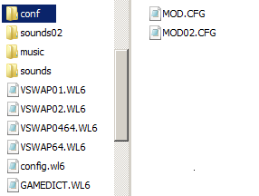
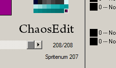
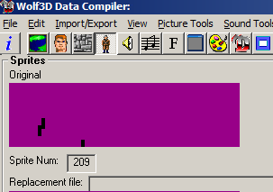

SIMPLE USER CONFIGURATION KIT (S.U.C.K.)
To sum up the 4 steps to modding suckcess:
S - Set up a text file
U - Unleash the variables
C - Call the file ????
K - Killing Profit
Jump to a section:
Enemies
Projectiles
Weapons and Ammo
Level Start
Sky
Player
Various Things
Messages
Textures
Static Objects
Pick-up Items
Custom Objects
Statusbar
XP System
Additional Sprites and Rotations
GAMEDICT.WL6
File contains various options to configure your levels and is also described in detail in the original documentation. It gives you access to following features:

| Level | Color | |
|---|---|---|
| ceilcolor | 2 | 66 |
| floorcolor | 21 | 42 |
| floor_default | 0 | |
| ceil_default | 233 |
texflats
| Level | Amount | |
|---|---|---|
| shading | 1 | 5 |
| shadegreen | 1 | 60 |
| shadered | 1 | 0 |
| shadeblue | 1 | 110 |
| Level | Num | |
|---|---|---|
| parallaxstart | 1 | 60 |
| parallaxcount | 1 | 16 |
| Level | Track | |
|---|---|---|
| levelmusic | 21 | "PLODDING" |
| levelmusic | 11 | "my_new_music" |
| titlemusic | "epicsong" | |
| intermusic | "BETWEEN" |
sounds "soundlist.txt"
In SOUNDLIST.TXT:
| snd | 0 | "test.wav" |
| snd | 1 | "player/test.wav" |
| snd | 2 | "player/44.wav" |
| snd | 3 | "guard/1.wav" |
| Episode | Level | |
|---|---|---|
| startepisode | 1 | 1 |
| startepisode | 2 | 30 |
| finalmap | 3 | |
| finalmap | 32 |
| Episode | Name | |
|---|---|---|
| episode | 1 | "Escape from Castle Golfenstein" |
| episode | 2 | "Operation: Eisenfrust" |
| episode | 3 | "Attack of the Space Mutants" |
| Level | Next Level | |
|---|---|---|
| nextmap | 1 | 5 |
| Level | Next Level | |
|---|---|---|
| secretlevel | 1 | 10 |
| secretback | 10 | 2 |
| Level | Seconds | |
|---|---|---|
| partime | 1 | 105 |
| partime | 14 | 442 |
| Wall id | Flip-side | |
|---|---|---|
| mirwall | 1 | 3 |
| mirwall | 33 | 2 |
| Wall id | Dark Side | |
|---|---|---|
| dwalls | 0 (door sides) | 667 |
| dwalls | 11 | 333 |
| dwalls | 23 | 666 |
| Palette | File | |
|---|---|---|
| palette | 1 | "wolfy.pal" |
| palette | 2 | "Intermission_Pal.BRGR" |
| Level | Display | |
|---|---|---|
| areascnum | 1 | 99 |
| areascnum | 2 | 74 |
| Level | File | |
|---|---|---|
| readme | "filename.xxx" | |
| leveltext | 3 | "folder/level5.art" |
| leveltext | 5 | "story/helpart.wlt" |
| endtext | 7 | story/end1.txt |
| Level | File | |
|---|---|---|
| vswap | 1 | "file.ext" |
| vswap | 2 | "vswap.wl3" |
planelight
teleporter "my_tele.txt" // put in conf folder
In MY_TELE.TXT:
| plane 5 id | o(neway) : exclude p(layer) e(nemy) a(ll) : player angle | |
|---|---|---|
| teleport | 1 | "o:e:122" |
| teleport | 3 | "b:e:0" |
| teleport | 4 | "b:p" |
| teleport | 63 | "o:e" |
The values (in this example: 1, 3, 4, 63) are placed on the 5th plane. Place teleport.wav (default) in the sound folder if a sound effect is desired. Each teleport is either paired (entry and exit or reverse) or a one-way ticket. 1 goes to 2 and vice-versa. 3 goes to 4 5 and 6 and so on teleport 1 "b:e:122" means id = 1, both ways, player only and angle will be set to 122 after the player teleports. The angle can be left out.
Level Specific Config
It is possible to have a config for each single level by adding the level number at end of the file name. If there is none for a specific level
it will fall back on the main config.
modcfg "name"
Add this in GAMEDICT.WL6 to set the name for the mod config or else it uses the default file name "mod.cfg". Configs should be located either
in "macenwolf/conf" or "macenwolf/modname/conf". The game checks the mod folder first if a mod is loaded (--file command) before checking the main folder.
If there is no config file the game will use the default game settings.
For example in Gamedict.WL6:
modcfg "funguns"
The game will look for a cfg file with the name "funguns.cfg", "funguns02.cfg" for level 2, "funguns37.cfg" for level 37 and so on. Default naming would be: mod.cfg, mod02.cfg, etc.
Actor Limit
The maximum per level for a mod is 5000 right now. So be a bit wary when spamming around enemies and projectiles in a level.
Auto-Level-Specific VSWAP
You can have a vswap for each single map by naming the file accordingly. Vswap02.wl6 would be for level 2, vswap44.wl6 would be for level 44.
Alternatively vswap files can be also assigned via the gamedict.wl6.
Multiple Sound Folders
Same as the vswap you can have one for each level. Name the folder sounds02 for level 2 and so on. If it can't find a sound file in macenwolf/mod/sounds02
it will look for it in macenwolf/mod/sounds and afterwards go for macenwolf/sounds.
============================== ENEMIES ==============================
Names
Here is a rundown of who is who:
grd = brown guards
ofc = white officers
mut = mutants
dog = dog
ss = big blue guards
hans = blue armored boss
sbbs = doctor with a needle
uber = ubermutant
trns = trans grosse aka brown haired hans
deth = deathknight
fake = fake hitler
mech = mecha hitler
hitl = adolfo
pac = pac-man ghosts
Rotations for Bosses and Standard Enemies
8-dir-enemies
8-dir-bosses
Enables rotations for standard enemies (guard, officer, mutant, ss, dog) and/or the bosses. The rotations are moved to the end of the vswap. See also Additional Sprites and Rotations on how to set up the sprites. They use the same map id numbers for directions and patrols as the classic DOS version. Check the map-editor definitions of Wolf3D (DOS) for paths and directional spawns. As of now Bosses don't have any new spawns definitions.
Short example from the setup in Additional Sprites and Rotations of how the vswap should look like.
guard standing frame (front): vswap #281
guard walking frame 1 (front): vswap #289
guard walking frame 2 (front): vswap #298
Hitpoints (_hp)
Health points of the enemies. Below is a list of the default values. Pac-Ghosts are an exception and vanish into thin air if shot.
| grd_hp | 6 |
| ofc_hp | 12 |
| mut_hp | 18 |
| dog_hp | 1 |
| ss_hp | 25 |
| hans_hp | 250 |
| sbbs_hp | 350 |
| uber_hp | 400 |
| trns_hp | 300 |
| deth_hp | 450 |
| fake_hp | 400 |
| mech_hp | 250 |
| hitl_hp | 250 |
| pac_hp | 1 |
Damage inflicted by Enemies (_damage)
The amount of the player raging when being shot. The default values are random.
| grd_damage | 10 |
| ofc_damage | 33 |
Enemy Speed (_speed)
Turn the enemies into road runners. Below is a list of the default values.
| grd_speed | 1280 |
| ofc_speed | 2560 |
| mut_speed | 1792 |
| dog_speed | 2303 |
| ss_speed | 1535 |
| hans_speed | 1792 |
| sbbs_speed | 1280 |
| uber_speed | 2048 |
| trns_speed | 1792 |
| deth_speed | 1792 |
| fake_speed | 1536 |
| mech_speed | 1792 |
| hitl_speed | 2048 |
| pac_speed | 1111 |
Enemy Animation Speed (_animspd)
The amount of time each enemy frame should be displayed in tics (60 tics = 1 second). The default game has different times for each frame. Affects the
walking and attacking. Possible uses range from goofy to insane.
| grd_animspd | 70 |
| ofc_animspd | 10 |
Enemy Walk Routine (_chase)
Enemy Attack Routine (_attack)
Enemy State (_state)
Make enemies solid or lets the player walk through them.
grd_state "clip"
ofc_state "solid"
pac_state "clip"
Enemy Feature (_feature)
Turn actors into flat sprites, make them translucent and fully bright if the shading option is enabled.
grd_feature "horiz_front" grd_feature "dither" ofc_feature "vert_mid" dog_feature "bright"
Enemy Sight (_sightdist)
Tile distance to get triggered by the player.
grd_sightdist 16
ofc_sightdist 4
Enemy Drop (_drop)
Spawns an object or enemy on death. Uses map id number. The guard could spawn another guard (id = 109) on death for infinite enemies or
every enemy could drop a treasure item.
grd_drop 23
ofc_drop 124
Enemy Lifetime (_lifetime)
Removes the enemy after spotting the player in a given timeframe.
grd_lifetime 11
ofc_lifetime 200
Enemy XP (_xp)
Experience points gained by killing enemies. See XP System. Each level could use a config that gives the enemies more and more hitpoints
but also more XP. Additionally the nextmap command could change the level order to function as a hub level for XP grinding.
grd_xp 300
ofc_xp 500
dog_xp 10
Enemy Death Variants
With this you can define alternative death animations depending on the player weapon. The variables are taken from a sub-config file. First
you define said file.
deaths "death.txt" // in macenwolf/yourmod/conf
Then you create the file and add work with the following variables. The function works like this: weapon : animation speed : frames : spritenum start The spritenum can be found in vswap section of several editors. Weapons 0-3 are knife to chaingun, 4-7 are player projectiles (fire, rocket, needle, fakefire).
grd_death "1:6:9:144" translated it means: 1 = pistol : 6 speed : 9 frames : sprnum 144 (+9 frames)
ofc_death "0:1:18:214" translated it means: 0 = knife : 1 speed : 18 frames : sprnum 214 (+18 frames)
Enemy Path Blocker
Invisible object that blocks the enemy (from entering rooms). Use your number as object id on plane 2.
In this example you could place object 500 in a circle around an enemy and the ai will never leave the circle.
Simple way to control the flow of a level and hordes of enemies.
enemy_block 500
============================== PROJECTILES ==============================
Names
What's up with all those projectile names?
en_fire = enemy flamethrower ball
en_miss = enemy rocket
en_need = enemy needle
en_ffir = enemy fakehitler fireball
pl_fire = player flamethrower ball
pl_miss = player rocket
pl_need = player needle
pl_ffir = player fakehitler fireball
Projectile Speed (_speed)
How fast the projectiles travel.
en_fire_speed 4608
en_miss_speed 8192
pl_fire_speed 16896
pl_miss_speed 16896
Projectile Lifetime (_lifetime)
Duration of projectile until it disappears. Normally they don't and only disappear if they hit something.
Time in tics (60 tics = 1 second).
en_fire_lifetime 60
en_miss_lifetime 360
pl_fire_lifetime 360
pl_miss_lifetime 1320
Projectile Animation Speed (_animspd)
The amount of time each frame should be displayed.
Time in tics (60 tics = 1 second).
en_fire_animspd 6
en_miss_animspd 3
pl_fire_animspd 3
pl_miss_animspd 12
Projectile Damage (_damage)
The amount of pain given to the target. Default values are random.
en_miss_damage 16
en_need_damage 30
pl_fire_damage 113
pl_miss_damage 32
Projectile Splash Damage (_splashdmg)
The amount of pain given in a certain radius when the projectile hits and explodes. Damage drops off over distance.
en_miss_splashdmg 116
en_need_splashdmg 300
pl_fire_splashdmg 13
pl_miss_splashdmg 32
Projectile Splash Distance (_splashdist)
The radius of the splash damage in tiles.
en_miss_splashdist 1
en_need_splashdist 7
pl_fire_splashdist 2
pl_miss_splashdist 64
Projectile Self Damage (_splashdist)
Who should be damaged by the splash damage?
en_miss_splashdist "enemies"
en_need_splashdist "player"
pl_fire_splashdist "all"
pl_miss_splashdist "enemies"
Projectile Player Knockback (_playerknock)
Knockback of player by the splash damage explosion (required). Over 500 can push you through walls.
en_miss_playerknock 200
en_need_playerknock 30
pl_fire_playerknock 126
pl_miss_playerknock 13
Projectile Homing Factor (_homing)
The level of stubborness of a rocket or other flying things.
============================== WEAPONS ==============================
Names
This time weapons are indicated by numbers. Shouldn't be too hard to memorize a handful of numbers or?
0 = knife
1 = pistol
2 = machinegun
3 = chaingun
4 = flamethrower
5 = rocket launcher
weapon_type_wp 0 "rocket"
weapon_damage_wp 3 20
First one refers to the knife (0) and second refers to the chaingun (3).
Weapon Type (_type_)
Type of weapon. You can make the knife shoot homing rockets.
Weapon Silencer (_silent_)
Adds a silencer to your weapon. In case you prefer to be a sneaky ninja. Enemies won't be alerted until one shoots at you.
weapon_silent_wp 2
weapon_silent_wp 5
Weapon Damage (_damage_)
Make the enemies die slowly. Melee and hitscan damage. Drops off after distance of 10 tiles. Default game has random values.
For rockets see projectile damage.
weapon_damage_wp 3 26
weapon_damage_wp 4 50
Weapon Fire Rate (_firerate_)
The attack pattern of the weapon. If you want the chaingun to act like a pistol set it to 0.
Weapon Speed (_speed_)
Animation speed of weapons. Default is 6.
weapon_speed_wp 3 8
weapon_speed_wp 4 12
Weapon Ammo Rate (_ammorate_)
How much ammo weapons should eat. Knife is ammoless! Rocket launcher uses rockets.
weapon_ammorate_wp 3 80
weapon_ammorate_wp 5 2
Weapon Self Knockback (_knockback_)
Kick of shooting a weapon. Reduces by 1/8 over time. Values over 500 can bomb you through walls.
weapon_knockback_wp 3 116
weapon_knockback_wp 5 56
Weapon Projectile Amount (_pamount_)
Amount of spawned projectiles when firing the weapon.
weapon_pamount_wp 3 4
weapon_pamount_wp 5 1
Weapon Projectile Angle (_pangle_)
Angle spread of the projectiles. Double, triple and quadruple shots!
weapon_pangle_wp 3 15
weapon_pangle_wp 5 5
Weapon Distance (_maxdist_)
Maximum reach of weapons. Counts in 1/4 of a tile. A value of 4 means 1 tile. For projectiles see pl_xxx_lifetime.
weapon_maxdist_wp 0 8
weapon_maxdist_wp 1 16
Weapon Start (_got_)
Start or don't start a level with weapon x in your hands. Without ammo the weapon will show up as soon as you collect some.
Do you want a weapon? "Yes" or "No".
weapon_got_wp 0 "no"
weapon_got_wp 1 "yes"
Ammo Capacity (ammo, rockets, gas) (_max)
The maximum amount of ammo you can carry.
ammo_max 99999
gas_max 1000
rocket_max 7
Backpack Increment and Capacity (_bag)
Ammo increment by backpack and max backpack storage
ammo_bag 100
ammo_bag_max 299
Gun Bobbing
Adding this line will enable your weapons to sway around while you move.
gunbobbing
Weapon Change Sound
Plays a sound when changing weapons. Uses sounds/selectweapon.wav (default).
weapon_selectsound
Weapon Scope
Scope-Zoom for any assigned weapon (0-5). Key bind can be found in the controls.
weapon_scope 1 // pistol weapon_scope 5 // rocketlauncher
============================== LEVEL START ==============================
Start Map From Scratch
Start next level with weapons, health, ammo, items, score, backpack, lives being reset. Also known as pistol start.
Excludes 'start' values set in config.
start_from_scratch
Ammo Start (ammo, rockets, gas) (_start)
The amount of ammo you have in your pockets at entering the level.
ammo_start 8
gas_start 1126
rocket_start 38278
Health Start (_start)
Start level with x health.
health_start 13
Lives Start (_start)
Start level with x lives.
lives_start 61
Armor Start (_start)
Start level with x armor.
armor_start 15
============================== SKY ==============================
Star Sky
Casts a black sky with stars in the given color.
starsky 35
Weather
Cast rain or snow.
weather "snow"
weather "rain"
Clouds
The color option turns it on and changes the color obviously. Shades is the amount of colors being used and speed can be set to 0 for static clouds.
cloudcolor 32
cloudspeed 4300
cloudshades "32"
============================== PLAYER ==============================
Player Movement Speed
Speed at which the player moves around. Default is 150. If the game is still too slow for you.
movement_speed 300
Player Health Capacity
Maximum health of the player.
health_max 3000
Player Armor Capacity
Maximum armor of the player.
armor_max 100
Player Movement Force
Makes the player accelerate and slide around. Not the most sophisticated ice-skating physics. Force_amount is in tics.
Setting force_decel to 0 will make the player slide forever.
force_amount 120
force_accel 1
force_decel 2
============================== MISC ==============================
info "insert text"
Shows the given text in the banana menu accessible in the main menu. Maybe you want to give some tips or just write Hello World.
info "THIS CONFIG WAS MADE BY CAPTAIN OBVIOUS"
Countdown Timer (in seconds, max. 3599 [1 hour])
Command lets you turn on a timer with 3 possible outcomes for the timer ending. Not everyone got as much time as the minotaur.
Level Mission
Optional level mission to end the map or the game (see finalmap definition in gamedict.wl6).
This would end the map as soon as you collect the gold key (map id = 43).
darktable "name.extension"
Shade effect for vertical/horizontal walls, which can be set manually in the gamedict.wl6 via "dwalls" or by using the 3rd plane. It's not an actual palette
and just the numbers of your current palette shuffled around to remap the colors. If you set all values to 0 the color of the wall sides would turn into
the first color of your palette. You could encode color specific messages on certain walls or have blood stains on walls being turned yellow.
darktable "light.pal"
vswap64
Writing simply vswap64 into your config will make the game use 64x64 textures and sprites. Prepare your vswap accordingly or
the visuals will be all over the place. Add "64" at the end of your file name (myfile64.wl6).
File naming via the auto-method for individual levels as followed: vswap0264 for level 2, vswap8964 for level 89.
Door Mechanics
Door speed and how long a door should remain open (in tics). Speed is n of 65536 per tic and by default 1024.
door_opentime 60 door_speed 10000
Pushwall Mechanics
How far a pushwall can go in tiles, at which speed and if it should kill enemies and the player.
pushwall_kills pushwall_tiles 20 pushwall_speed 5
Automap Mechanics
The name options takes the map name from the gamemaps file (see editors for the option to change) and displays it on the automap.
Layers options: 1 = disables automap, 2 = displays walls, 3 = displays walls + objects, 4 = displays walls + objects + enemies
automap_name automap_layers 4
Skip Intermission
Skips intermission and the Get Psyched screen in case you hate numbers and prefer a seamless flow.
skip_intermission
Fixed Viewsize
Forces a viewsize for the screen and disables the option in the menu.
fixedview 20
Palette "file.xxx"
Allows for a different palette on each level if you have set up a config per level. The colors are plain shifted and not converted allowing
for a few palette tricks. In exchange you will have to keep the HUD colors or it will look off color-wise.
The palette should be in 768-bytes ChaosEdit format.
palette "pal/palette.pal" // macenwolf/yourmod/pal/palette.pal
============================== MESSAGES ==============================
message "filename"
Option to display a message on top of the screen when you collect an item. First you specify the message file in the mod config.
messages "subfolder/msgs.txt" messages "myfile.xxx" messages "messages.wl6"
Then you create a file called msgs.txt (or any of the above) and put for example following lines in it.
The number refers to the object id number from plane 2.
============================== TEXTURES ==============================
textures "filename"
textures "my_tex_file.txt"
Option for interactive and animated textures. First you specify the texture file in the mod config.
Then you create a file called my_tex_file.txt and put for example following lines in it.
Wall Animation
============================== STATIC OBJECTS ==============================
A simple method to modify existing objects. You know those things that are plastered all over a level, always block your way and do nothing
else except stare at you when you come by every 5 minutes. Another way is to use the Custom Objects method to create new objects
from scratch.
Solid Objects (_solid_)
statobj_solid_id 48 "yes"
Disable Pick-Up (_nobonus_)
statobj_nobonus_id 48
Billboard Objects (_board_)
Options are: vert_back, vert_front, vert_mid, horiz_back, horiz_front, horiz_mid
statobj_board_id 48 "vert_mid"
Lit Objects (_lit_)
statobj_lit_id 48 "yes"
============================== ITEMS ==============================
A simple method to modify existing items. Another way is to use the Custom Objects method to create new items
from scratch.
Names
Effects
Some examples:
chest_time 10
food_ignore "ammo"
cross_damage 10
medikit_ammo 10
chest_armor 40
============================== CUSTOM OBJECTS ==============================
Method to create new sprite objects by using another sub-config file system. First define the file and place it inside the conf folder.
sprites "spr.txt"
Assign Sprites (_num)
spr_num 457 364
spr_num 4 77
spr_num 54 108
Sprite Animation (_frames, _animspeed)
spr_frames 54 11
spr_animspeed 54 3
Sprite State (_state)
spr_state 54 "solid"
spr_state 94 "clip"
Sprite Features (_feature)
spr_feature 54 "horiz_front"
spr_feature 94 "vert_mid"
spr_feature 94 "dither"
spr_feature 66 "bright"
spr_feature 23 "vert_back"
Projectile Pass (_projectiles)
spr_projectiles 54 "nopass"
spr_projectiles 94 "pass"
Sprite Use (_use)
spr_use 54 "treasure:13"
spr_use 34 "ammo:25"
spr_use 46 "rocket:1"
spr_use 95 "gas:111"
spr_use 24 "weapon:4"
spr_use 24 "health:69"
spr_use 25 "damage:51"
spr_use 26 "key:1"
spr_use 27 "key:2"
spr_use 28 "time:240"
spr_use 29 "armor:100"
spr_use 432 "xp:301"
spr_use 433 "lamp"
spr_use 434 "push"
spr_use 435 "carry"
spr_use 436 "log:conf/story/HELPART.WLt"
============================== HUD/STATUSBAR ==============================
hud_x id amount
hud_x id amount
1 = statusbar
hud_x 1 1111
hud_x 9 16
hud_x 17 11
hudpic_x pic
hudpic_x 3 10 // x = 10, y = 32, pic = 3
============================== XP System ==============================
The key to bring up the player status screen can be found in the control menu.
XP values are reset when a new game is started.
The msg_level command could be abused for plain story-telling. Player stats stay 0 and only 5 specific items in a level
give points for a message to pop up. 1 item collected, story screen, 5 items collected, next story screen and so on.
First you define the sub-config file anywhere in GAMEDICT.WL6.
xplevels "xp.txt"
Word Definitions
str_stamina "endurance"
str_hp "hitpoints"
str_defense "def"
str_armor "armor"
str_speed "speedometer"
str_strength "force"
str_ammo "mana"
str_rocket "magic"
str_gas "ether"
str_xp "wisdom"
Level Points
xptolevel 0 100
xptolevel 1 200
xptolevel 2 350
xptolevel 3 500
xptolevel 4 1000
xptolevel 5 2500
Level Stats (stat level amount)
max_damage 0 10
max_damage 1 16
max_damage 2 23
Additional damage to your weapon damage. If your weapon does 200 damage the overall damage will be 216 on level 1.
max_health 0 150
max_health 2 170
max_health 3 200
max_stamina 0 200
max_defense 0 10
max_armor 0 10
max_ammo 0 20
max_gas 0 5
max_rockets 0 1
max_speed 0 80
max_speed 2 120
movement_speed from the mod config has a higher priority. For possible case of ice-skating levels.
Stamina
stamina_refresh 0 1
stamina_refresh 8 2
stamina_cooling 0 120
stamina_cooling 1 100
The amount stamina regenerates on level 0 while not actively using it. Cooling is the amount of time (in tics) the player has to wait
after draining all stamina.
stamina_cost 0 1 // knife
stamina_cost 1 2 // pistol
stamina_cost 2 3 // mg
stamina_cost 4 120 // flamethrower
stamina_cost 5 100 // rocketlauncher
stamina_cost 7 10 // running
Amount of stamina drain caused by each weapon (0-5) and running (7). There are no levels in use here. Just the universal cost of each.
stamina_color 255
Bar color for the Statusbar.
Level Message & Colors
msg_color 155
Font color for the status and level-up screen. Look up the palette index for the color.
msgbox_color 255
Background color for the status and level-up screen. The value 255 will remove the background for the level-up.
msg_level 1 "you leveled up and got +1 iq"
msg_level 2 "you leveled up and got +2 iq"
msg_level 3 "You have turned into the legendary Wolf Slayer and have aquired \nthe power to rip and tile. Health Stat is up by 100."
Message that displays when levelling up. Long messages might require newlines to be put manually by adding \n.
msg_default "As you conquered the vast Waste Lands and, \nwe crushed the enemies before you\nthe sky darkened.
The gates of hell opened\nand a vile creatures greets you.\nA devilish djinn curses you with new powers,\nand vanishes into thin air
a moment later.\nYou feel your blood pulsating with an unknown life force.\nYour muscles put even Hercules to shame and reached a state of infinite stamina."
The default level-up message if no specific one is set for a level. Level 1-3 will display above message and then it will use the default one for any further
level. The default one automatically counts and displays the stats at the bottom of the message.
============================== EXTRA SPRITES ==============================
Unused static objects
Fakehitler
BJ's Endgame Run
Rotations
If you want to just add the rotations and not the fakehitler or BJ jump you still need to add some filler sprites before the rotations.
If you think this solution is stupid feel free to change it yourself.
Vswap order with both rotations enabled:
Vswap order with only boss rotations:
Order of the enemy rotations:
Order of the boss rotations:
Order of enemy rotation in detail. 40 frames for each one.
Reference numbers with 8-dir bosses and 8-dir enemies enabled. If you are using WDC subtract 2 from the sprite num. In the screenshot it would be 209-2.
WDC doesn't count the first sprites, game over and victory.


LINKS
MacenWolf on DieHard Wolfers Forum
Make objects solid ("yes") or not solid ("no").
statobj_solid_id 43 "no"
Make a pick-up item (map id number) non-pickable. Below's example won't let you collect the medikit (map id = 48) anymore.
Turns objects into flat directional ones.
statobj_board_id 37 "horiz_front"
Make objects bright ("yes") or not ("no"). Requires shading to be enabled to have any effect.
statobj_lit_id 37 "no"
cross = cross, treasure item
chalice = golden chalice, can be sold at auctions
chest = full of fake diamonds
crown = be the King of Wolfenstein
ammoclip = ammo clip placed on map
ammoclip2 = ammo dropped by enemies
ammobox = box full of little friends running faster than you
dogfood = don't steal the food man's best friend
food = dirty food on the floor
medikit = it's good for you
life = usually a blue sphere with a face on it
gascan = ammo for the flamethrower
rockets = missiles for the missile launcher or whatever you made out of it
_damage = damage to the player
_health = health for the player
_armor = armor for extra defense
_ammo = ammo amount
_gas = flamethrower ammo
_rockets = missile amount
_time = adds time to the countdown timer if enabled (in seconds)
_ignore "health" = you can't pick it up if you have maximum health
_ignore "armor" = you can't pick it up if you have maximum armor
_ignore "ammo" = you can't pick it up if you have maximum ammo
_ignore "gas" = you can't pick it up if you have maximum gas
_ignore "rockets" = you can't pick it up if you have maximum rockets
ammobox_time 10
Collecting the chest or ammobox item gives you 10 extra seconds for the countdown timer.
You can't pick up food if your ammo is at max.
cross_rockets 6
This gives you 10 damage and 6 rockets when picking up the cross.
medikit_damage 50
medikit_rockets 42
Collect a medikit and get 10 bullets, 42 rockets and 50 damage.
Collect a chest and get 40 armor.
You assign a sprite (sprite number) to a map id (plane 2). With this you can place, for example, the object 54 in a map editor and it will spawn sprite 108.
Animates the static object with a given speed and makes it a little bit less static. For example id 54 could have 11 frames.
Makes a sprite block (solid) or not (clip).
Hate that a sprite keeps spinning? Make it a directional sprite (billboard in abcDoom lingo) instead. A flat cardboard cutout that can be either centered or at the edge of a tile.
They are often used to create windows and fences in mods. Make a sprite translucent with the dither option for a glass wall or a ghostly effect.
The bright option makes a sprite lit if light shading is enabled.
Lets a sprite pass (pass) or not (nopass) projectiles. In other words lets your rocket fly through a column or not.
Gives a sprite a deeper meaning than to just stand around and look pretty. It could be an item to pick up or be a log file.
The id refers to the part of the hud you want to modify. "hud_x id 1111" and "hud_y id 1111" disable the given HUD part.
The default alignment is bottom_center.
hud_y id amount
hud_align id alignment ("bottom_right", "bottom_left", "bottom_center", "top_right", "top_left", "top_center")
2 = area
3 = items
4 = items total
5 = secrets
6 = secrets total
7 = score
8 = kills
9 = enemies
10 = face
11 = lives
12 = health
13 = ammo combined
14 = ammo gas
15 = ammo rockets
16 = ammo bullets
17 = key gold
18 = key silver
19 = timer
20 = armor
21 = stamina
hud_y 1 1111
Disables the main statusbar.
hud_y 9 75
hud_align 9 "top_right"
Adds enemy count and moves it to the top right.
hud_y 17 33
hud_align 17 "bottom_left"
Moves the gold key to the bottom left.
Draws any VGAGRAPH image on the HUD. Just pick the image slot number and the coordinates.
hudpic_y 3 32
hudpic_align 3 "bottom_center"
For the level-up and status window.
The amount of experience points you need for each level. You start at level 0 and need 100 points to level 1 and so on.
Points can be either gained by killing enemies or collecting items.
The amount the player stats increase with each level.
The amount the player stats increase with each level.
The amount the player stats increase with each level.
To make use of 12 unused static objects you need to add 12 sprites after the last sprite (BJ-automap-face).
Here are the corresponding map id numbers in the same order as the sprites:
25, 28, 32, 33, 38, 41, 45, 60, 61, 68, 69, 70
Followed by 13 sprites for Fake Hitler (map id 160). The order is:
4 walk frames
1 attack frame
2 fireball frames
6 death frames
Followed by 8 sprites for the BJ jump 'n' run animation, in case you want to use the endgame trigger.
After the endgame run come the rotations for the standard enemies or bosses.
If you have both enabled it is first the enemies and then the bosses.
victory | projectiles | enemies | static | pacman | weapons | boss fix frame | BJ automap (4) | unused stats (12) | Fake Hitler (13) | BJ run (8) | 8-dir enemies (200) | 8-dir bosses (280)
victory | projectiles | enemies | static | pacman | weapons | boss fix frame | BJ automap (4) | unused stats (12) | Fake Hitler (13) | BJ run (8) | 8-dir bosses (280)
| dog | guard | mutant | officer | ss |
| deathknight (starts at 241 or 441) | hans | hitler | ubermutant | mecha | schabbs | trans grosse |
| 8 sprites standing | 8 sprites walk frame 1 | 8 sprites walk frame 2 | 8 sprites walk frame 3 | 8 sprites walk frame 4 |
SPRITE
SPRITE NUMBER
Automap BJ West
207
Unused Stat 1
208
Fakehitler Frame 1
220
BJ Jump 1
233
Dog Stand 1
241
Guard Stand 1
281
Guard Walk 1 Frame 1
289
Mutant Stand 1
321
Officer Stand 1
361
SS Stand 1
401
Deathknight Stand 1
441
Hans Stand 1
481
Hitler Stand 1
521
Uber Stand 1
561
Mecha Stand 1
601
Schabbs Stand 1
641
Trans Stand 1
682
MacenWolf on WL6 Wiki
ModDB page